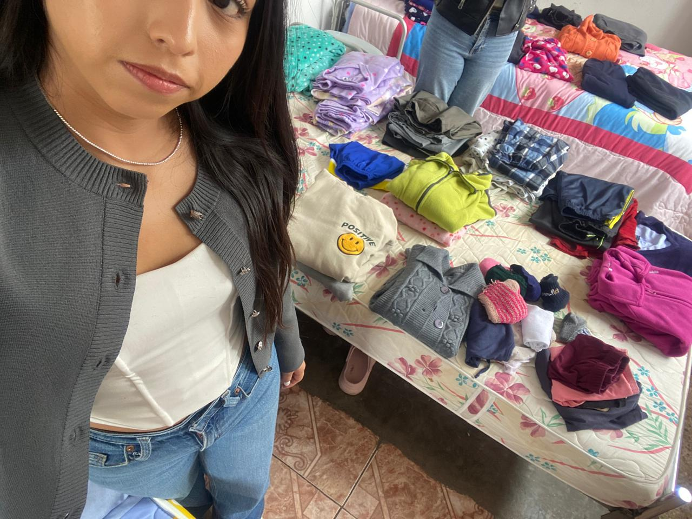
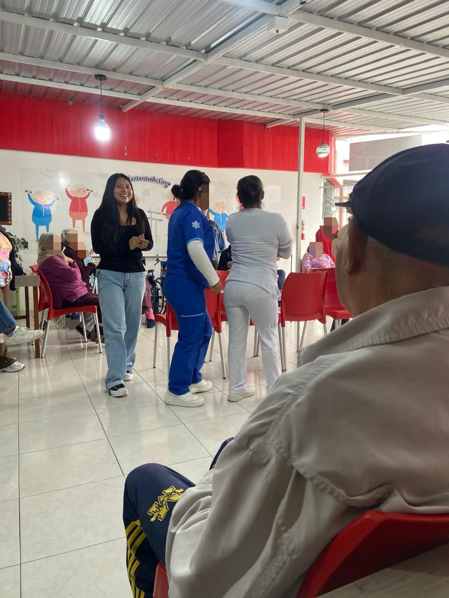
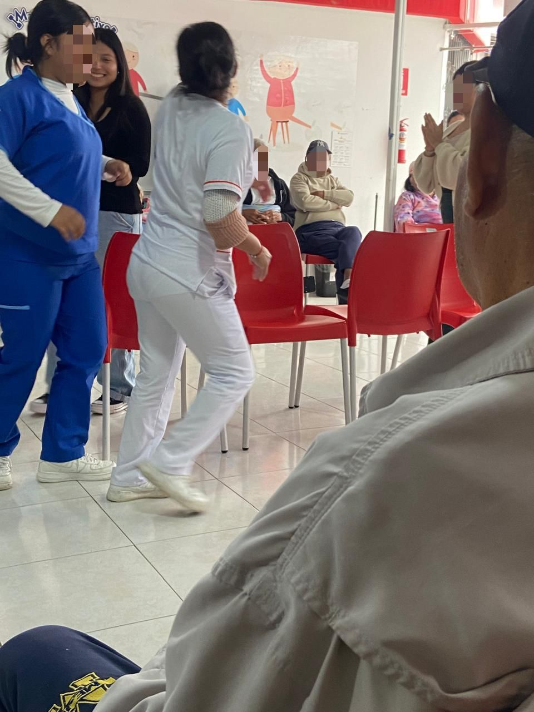
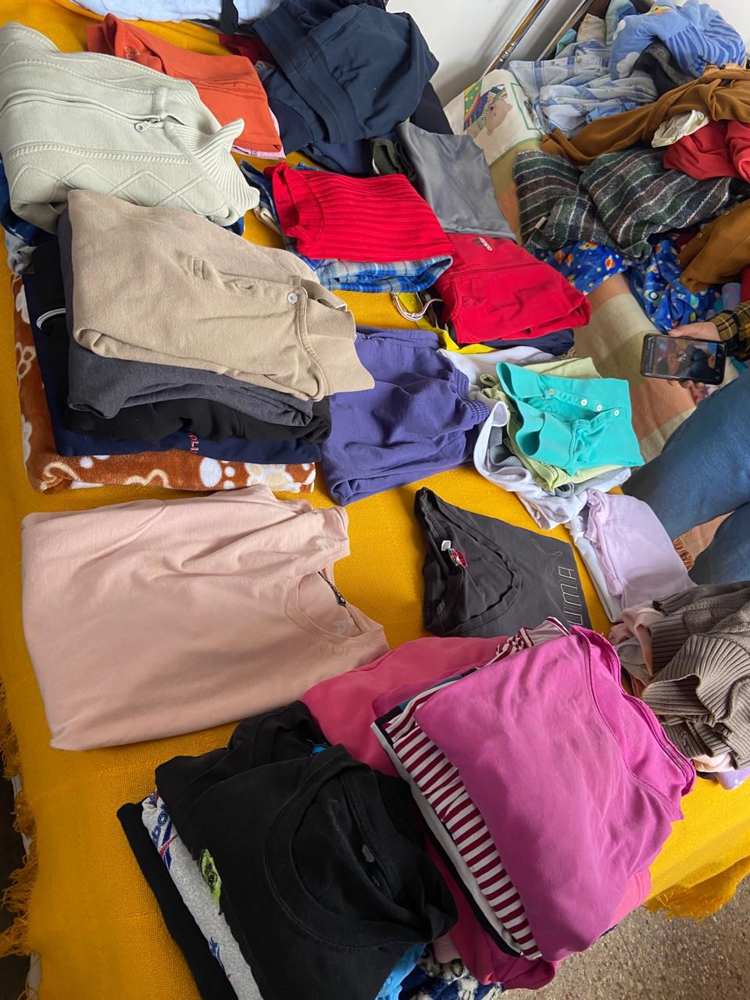
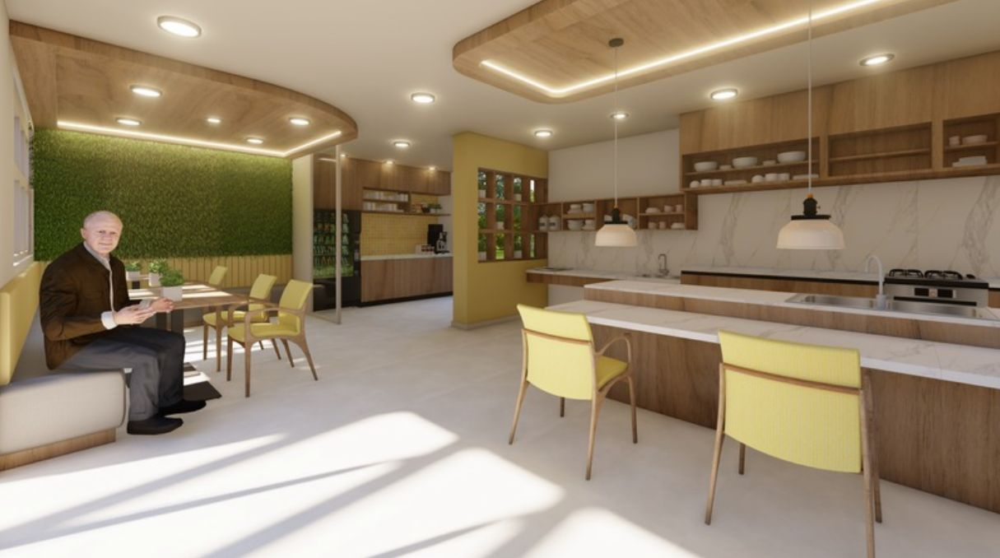
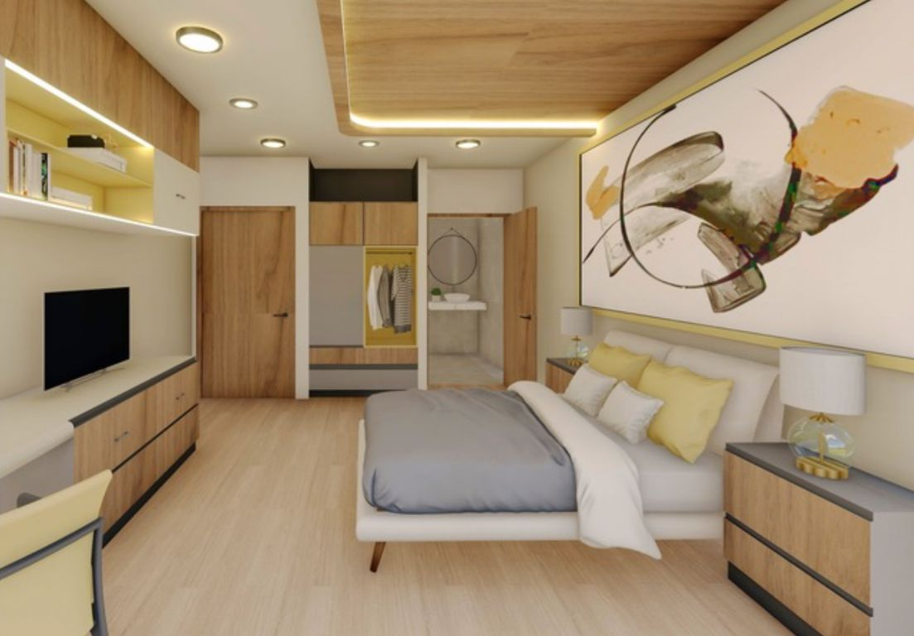
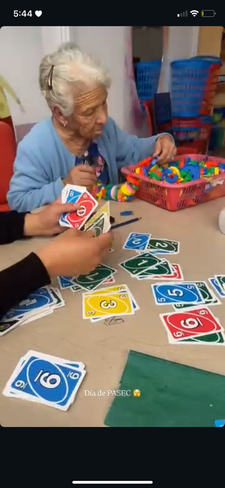
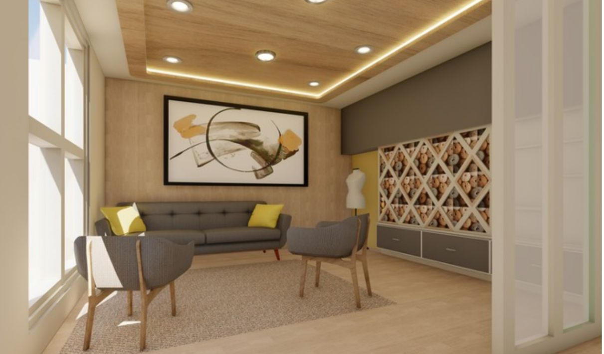

El Camino del Aprendizaje y Servicio

Explicación del Producto y Aprendizajes
A través de este póster, he logrado sintetizar la metodología de "Aprendizaje y Servicio", la cual es un puente vital que une el rigor académico con el servicio comunitario para resolver brechas reales en nuestra sociedad. En la USFQ, este proceso se materializa en el PASEC, donde los estudiantes construimos conciencia cívica y tolerancia hacia grupos vulnerables. Durante mi experiencia en la Cruz Roja Ecuatoriana de Otavalo, trabajé directamente con adultos mayores que enfrentan el abandono y la crisis de seguridad social.
Aprendí que la ciudadanía no es un concepto estático, sino que se ejerce a través de la integración de la ética en situaciones de vulnerabilidad extrema. Realicé actividades de asistencia alimentaria, higiene de espacios comunes y acompañamiento emocional. Estos actos me enseñaron que el respeto y la empatía son las habilidades más valiosas para un profesional. Relevante para mí, este aprendizaje me sacó de la teoría para entender que un piso limpio o una comida servida con cariño devuelven la dignidad a quienes lo han perdido todo.
Personalmente, este impacto rompió mi creencia de que ayudar era solo una acción esporádica o un "favor" de tiempo libre. Descubrí que la responsabilidad social es un hábito de conciencia diaria. En lo profesional, este proyecto me obligó a revisar mi rol futuro: ahora comprendo que mi éxito no se mide solo en logros técnicos, sino en mi capacidad para velar por el bienestar colectivo y combatir la indiferencia sistémica ante la vejez.
Transformando la Visión Social
Evolución de mi Definición de Ciudadanía
Mi visión inicial de ciudadanía responsable estaba ligada al cumplimiento de leyes y al pago de impuestos, una visión abstracta y centrada en normas constitucionales. Definía la responsabilidad social como una toma de conciencia sobre el impacto individual en el bienestar colectivo, viéndola como un compromiso ético necesario para evitar el desequilibrio ambiental y social. Era una definición correcta académicamente, pero distante de la realidad humana.
Tras vivir el PASEC en la Cruz Roja de Otavalo, mi segunda definición es mucho más profunda: ser ciudadano responsable es un acto de amor, presencia y cuidado hacia los eslabones más frágiles de nuestra sociedad. He pasado de ver la responsabilidad social como algo que hacen "las grandes empresas o activistas desde un escritorio" a entender que se ejerce desde lo más mínimo, como lavar la ropa o barrer el espacio de un adulto mayor.
¿Qué cambió? Cambió mi percepción de la escala. Antes pensaba que mi impacto era limitado, pero ahora sé que un piso limpio previene una caída y devuelve el orden que la calle arrebató a estos ciudadanos. El aprendizaje clave fue salir de mi "burbuja" de indiferencia. ¿Qué se mantuvo? Permaneció el compromiso ético con el bienestar común, pero ahora ese compromiso está humanizado. Esta evolución se debe a que comprendí que los adultos mayores son una deuda histórica de nuestra sociedad que requiere ciudadanos que den un paso al frente. La ciudadanía responsable no se proclama; se ejerce en el silencio del servicio diario.
Pilares de mi Accionar Ciudadano
| Valor | ¿Por qué es importante? | Aplicación en el Servicio (Cruz Roja) |
|---|---|---|
| Empatía ❤️ | Permite conectar con el dolor ajeno y combatir la indiferencia en un mundo emocionalmente distante. | Al ayudar a comer y organizar actividades recreativas, valorando la paciencia y el respeto a la vulnerabilidad. |
| Responsabilidad Social 🌍 | Es un hábito de conciencia para mejorar el entorno, no solo una obligación universitaria. | Barrer, trapear y organizar la ropa, entendiendo que el orden da tranquilidad y salud a los residentes. |
| Respeto y Dignidad ⭐ | Es reconocer el valor de cada persona, especialmente de quienes sufren el olvido social. | Escuchar historias de vida repetidas y saludar con respeto activo, reconociendo al adulto mayor como ciudadano pleno. |




Mirando hacia el Futuro
Como Estudiante Universitario
Compromiso: Buscar espacios de apoyo comunitario permanentes e informarme políticamente.
Indicadores: Número de horas de voluntariado semestrales y revisión de planes de gobierno locales.
- Investigar candidatos con políticas reales de protección a grupos vulnerables.
- Ceder el asiento y ayudar activamente a adultos mayores en Otavalo y cualquier espacio público.
- Mantener el voluntariado en la Cruz Roja más allá de las horas de clase obligatorias de PASEC.
- Fomentar el respeto activo hacia los ancianos en mi círculo de la USFQ.
Como Futuro Profesional
Como futura diseñadora de interiores, mi trabajo tiene un impacto directo en la creación de entorno más accesibles y funcionales para las personas de la tercera edad, y esto está alineado con la ODS11, que busca garantizar que las ciudades sean inclusivas y accesibles para todos.
Objetivo:
Mi objetivo es diseñar espacios interiores accesibles y seguros para personas de la tercera edad, con el fin de mejorar su calidad de vida y fomentar la inclusión en la sociedad, incorporar al menos 1 espacio público o de vivienda para personas mayores e incorporar elementos accesibles, como pasillos más anchos, iluminación adecuada, mobiliario adaptado. Además de conseguir un alto porcentaje de satisfacción con respecto a la mejoría de la accesibilidad, con encuestas o entrevistas, pero principalmente viendo si las personas de la tercera edad se sienten con más confianza al entrar a ese entorno.
Actividades:
- Realizar una investigación sobre las normativas y estándares de accesibilidad para personas de la tercera edad en espacios interiores, y encontrar las mejores opciones para su diseño.
- Eliminación de barreras física, es decir no escaleras o pasillos estrechos para que las personas de la tercera edad puedan tener acceso completo a la instalación.
- Tecnología de apoyo, hoy en día gracias a la inteligencia avanzada se puede tener una iluminación más cómoda, donde solo se necesite de la voz o sensores de movimiento, de esta manera las personas de la tercera edad no deben hacer un esfuerzo extra al prender o apagar las luces.
- Accesibilidad universal, todos los espacios deben tener medidas universales incluido para personas en silla de ruedas, de esta manera fomentar la autonomía del adulto mayor.
- Implementar el diseño con ayuda de arquitectos o otros diseñadores, buscando lo mejor para este grupo vulnerable, utilizando materiales adecuados.
Evaluación:
- Realizar entrevistas o encuestas para medir su nivel de satisfacción con respecto a la accesibilidad, funcionalidad y la comodidad de los espacios, se puede considerar un éxito si más de la mitad de los usuarios reportan una mejor satisfacción.
- Observar cómo los residentes interactúan con el nuevo diseño y si llega a ser necesario, realizar ajustes adicionales para mejorar la experiencia.
- Por último, realizar un informe del resultado y logros alcanzados, de esta manera ver nuevas estrategias para mis futuros proyectos donde contribuya al ODS11.
A continuación, mostraré algunas ideas y el proceso de uno de mis proyectos de mi carrera de diseño interior que realicé mi anterior semestre, el cual es un DAY CARE PARA PERSONAS DE LA TERCERA EDAD, donde se creó un espacio acogedor con actividades dinámicas para que puedan sentirse autónomos, pero especialmente accesible para este grupo vulnerable, mi idea es poder crear muchas más de estos aportes en mi futuro.




